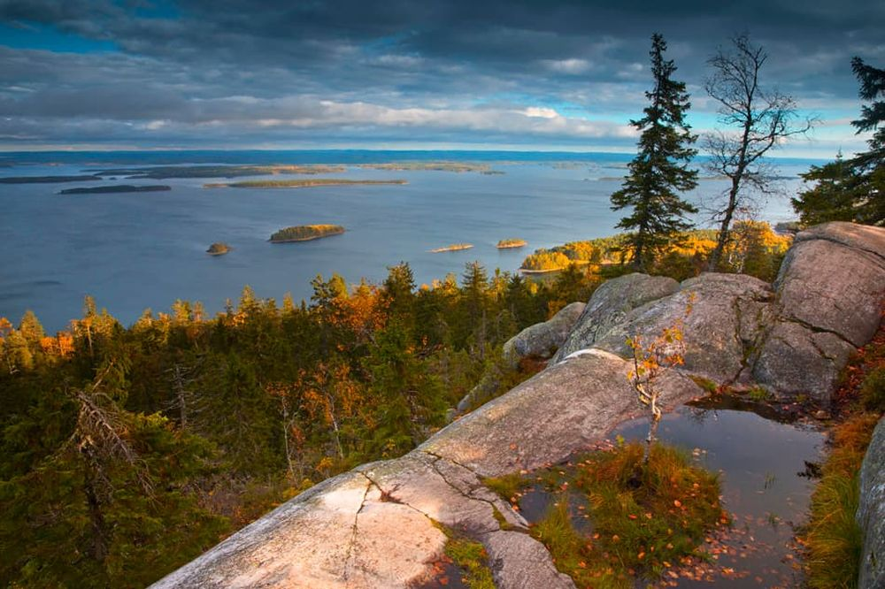

Descoperă Koli - O călătorie în Finlanda
Koli este un loc cunoscut pentru frumusețea sa naturală și oferă o varietate de atracții captivante pentru vizitatori:
-

Parcul Național Koli - Natură sălbatică
Explorați acest parc național pentru a vedea peisaje spectaculoase cu vârfuri de stâncă și lacuri pitorești.
-

Priveliști panoramice din Koli - Fotografii de neuitat
Urcați pe vârfurile Koli pentru a vă bucura de priveliști panoramice asupra regiunii și a lacurilor.
-

Lacul Pielinen din Koli - Relaxare lângă apă
Bucurați-vă de plimbări cu barca, pescuit sau doar de relaxare pe malul acestui lac impresionant.
-

Patrimoniul cultural din Koli - Tradiții finlandeze
Vizitați muzee locale și descoperiți tradițiile și cultura finlandeză autentică din regiune.
-

Drumeții în Koli - Aventuri în aer liber
Explorați traseele de drumeții și călătoriți prin pădurile și peisajele nordice pitorești.
Concluzii
Koli este un paradis pentru iubitorii de natură și aventuri în aer liber, oferind o experiență autentică finlandeză.